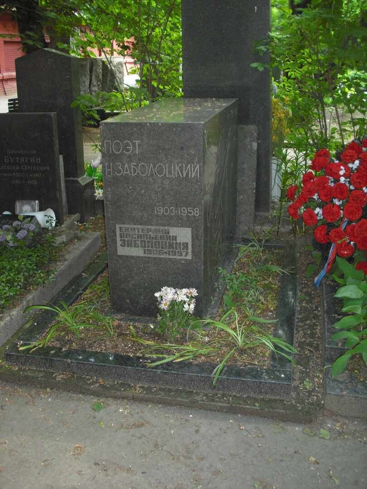

Прочитать больше об Н.А.Заболоцком
Два мира есть у человека:
Один, который нас творил,
Другой, который мы от века
Творим по мере наших сил.
Родился Николай 24 апреля 1903 года поблизости Казани. Поэзия в биографии Николая
Заболоцкого была основным увлечением уже с детства.
В 1927 году Николай вместе с другими писателями
основывает Объединение Реального Искусства (ОБЭРИУ).
Скончался Заболоцкий 14 октября 1958 года в
Москве.
